EX‑CommandStation / Booster One Express


{kind=link}
XXX
Designed by the DCC-EX development team, the EX-CSB1 replaces up to 3 different stacked Arduino boards to provide a complete, expandible DCC and DC PWM command station or booster with dual 5A track outputs, integrated programming track capability, and built-in fast WiFi for throttle control connections.
{kind=link}
EX-CSB1 CommandStation / Booster
XXX
What is the EX-CSB1?
The EX‑CommandStation / Booster One Express is the first fully integrated DCC Command Station with DC PWM and Booster mode capabilities developed by the DCC-EX Team. This versatile board can function as a complete Command Station with USB or WiFi connectivity or serve as a stand-alone booster, making it an ideal addition to any layout, including those using non-DCC-EX systems.
- Key Features:
All-in-one DCC Command Station/Booster: Compatible with DCC and capable of PWM DC output
Built-in Fast WiFi: Supports up to 10 simultaneous throttle connections, expandable with JMRI
Advanced Hardware: Utilizes an ESP32 microcontroller with dual DCC or PWM DC 5A outputs, including variable current limit control
Expandable Outputs: Can accept a DCC-EX EX-MotorShield8874 for two additional DCC/DC PWM outputs, providing power to four total districts. Multiple EX-CSB1s can be added as boosters around the layout.
Protection & Safety: Software programmable over-current protection, and hardware over-current, over-temperature and reverse voltage protection
Versatile Power Supply: Operates with a single 12V to 25V power supply that powers the entire system
USB-C Interface: For easy software updates, connection to EX-WebThrottle or JMRI, and logging/debugging
Accessory Support: Qwiic/STEMMA QT 3.3V, compatible I2C connector and extra I2C pin headers for all your accessories
Pre-Installed with DCC-EX Command Station Software from most suppliers
Auto-Reverser capability assignable to each DCC output independently
RailSync DCC input for automatic booster mode engagement under software control (EX-RAIL)
OLED Display: Bundled graphical display for status and diagnostics, with support for additional displays
- Benefits include:
Ready-To-Run: Pre-assembled, with no need for additional assembly or configuration
Enhanced Performance: Faster WiFi than an ESP8266 with support for double the number of connections, faster processor, and a great deal more memory than an Arduino Mega for complex EXRAIL automation/animation scripts
Efficient Power Usage: Less voltage drop, ensuring more power reaches the track
Flexible Output Management (TrackManager tm support): Dynamically assign outputs to different modes (DC/DCC/PROG/Auto-Reverse), with proper NMRA current limits
{kind=link}
The EX-CSB1’s robust, single-PCB design includes integrated MOSFET motor drivers from Texas Instruments, providing up to 5A peak power per track output. This allows for simultaneous operation of multiple trains with reduced power consumption and heat generation compared to traditional systems.
With its dual role as a command station or booster, the EX-CSB1 can be strategically placed around a layout, seamlessly switching to booster mode upon detecting a RailSync input signal. This feature is particularly useful for modular layouts, ensuring smooth operation across different sections once joined together and slaved to a master DCC signal. Distributing power around the layout also reduces the cost of heavy copper lines to carry the DCC signal that would otherwise be needed with centralised power.
An additional DCC-EX EX-MotorShield 8874 can be inserted onto the command station board to provide two more DCC or PWM DC outputs with the same performance characteristics and output mode flexibility.
{kind=link}
EX-CSB1 Stacked with EX-MotorShield8874
The system includes comprehensive protection features such as reverse polarity protection, hardware and software overcurrent protection, overvoltage protection, and thermal protection. It also provides clear status indications via LEDs for microcontroller power, track input supply, track output power per output channel, DCC/DC mode indication and direction for DC mode, and WiFi connection status.
The EX‑CommandStation / Booster One Express’s built-in EXRAIL layout Animation and Automation capabilities enable advanced control of layout operations, including crossing controls, signal management, automated train routing, layout lighting control, and much more whilst being much simpler to learn than Arduino C++ programming.
XXX
Why did we make it?
After the success of our EX-CommandStation software and then the EX-MotorShield8874, which allowed modellers to build their own setups, we realized there was a need for something even simpler. The DCC-EX Team wanted to create a solution that would appeal to a wider range of modellers, especially those who might not feel as confident with the electronics and software or those who just prefer to spend time enjoying their layouts instead of tinkering with tech.
We wanted to keep the sense of accomplishment that comes with a DIY project, but make it much easier, smaller, and more “plug-and-play”. After all, most of us would rather focus on running our trains than on troubleshooting wiring or connections. Whether you consider yourself a Conductor, Tinkerer, or Engineer, you might appreciate an all-in-one solution that saves time and space, and reduces complexity. So we asked ourselves, “What features would the ideal entry-level yet expandible command station have?”. And that’s how the EX‑CommandStation / Booster One Express was born.
XXX
How can I get one?
Units may be purchased from the following sources:
In Australia, New Zealand and Asia-Pacific from Millennium Engineering Pty Ltd
In Europe from Semify’s Web Store (based in Austria)
In the US from the DCC-EX Store or…
from Smart Hobby, LLC. You can also find Smart Hobby on Facebook
In the UK from Chesterfield Model Making & Miniature Electronics
and other manufacturers licensed by DCC-EX.
The EX-CSB1 Command Stations normally come with an OLED status display and a carrier base mount (sometimes called a “sled”) or case depending on supplier. There are different options for the board such as with or without an additional EX-MotorShield8874 for two additional DCC/PWM DC outputs. Prices start from around $129-$149 in the US without and with a power supply, to approximately £98 in the UK, €115 in Europe, and in Australia starting from $AU190. Prices typically do not include tax and shipping.
Click here for ordering in quantity of if you wish to become a reseller.
XXX
Board layout

EX-CSB1 top (click image to enlarge it)

Input Power Barrel Jack - The CSB1 normally comes with a barrel jack for compatibility with most laptop-type power supplies that use a 2.1mm inner hole diameter and a 5.5mm outer shank diameter. Be careful since some power supplies have a 2.5mm inner hole which is likely to be too loose. The barrel jack input power is reverse voltage protected. This supplies a 5V switching regulator for all electronics on the board including a 3.3V regulator for 3.3V components, an optional EX-MotorShield 8874 stacked on top, and power out to the track. While it is capable of 10v-25v operation, it is best to choose a suitable track voltage for your scale. Typically this is 12-15v for N scale, and 14-16v for HO scale. With help in choosing your power supply or using one with bare wires instead of a barrel connector, see Powering the EX-CSB1 below.
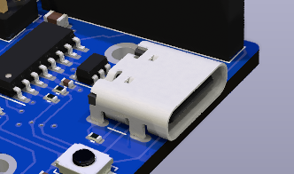{kind=link}
USB-C Power/Data Connector - The USB connector can provide power from a computer or any 500mA or larger USB or USB-C Power Delivery (USB-C PD) power supply. In this way you can connect your EX-CSB1 to a computer and update your software version or load EXRAIL scripts that run your accessories. However, without a power supply powering the DC input jack, you cannot supply power to the rails to run trains. You can connect your track Power supply (see above) to the barrel jack while the USB is connected, as they will not interfere with each other. You may also wish to do this to isolate the EX-CSB1 processor power from any interruptions to track power due to overload for example. The USB port is also very useful for connecting a serial monitor to test the command station and view logging information in real time to aid in fault finding. See Using a Serial Monitor
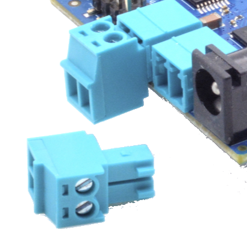{kind=link}
Track A and B Outputs - These are female pluggable terminals that accept a removable male screw terminal plug (included with your CSB1). Using the removable connectors allows for easy reconfiguration, testing, and placement of your command station. You can unsolder these connectors (or ask for a special order) and replace them with 3.5mm pitch screw terminals if you prefer. For DCC operation, output A is usually the MAIN track and output B is the programming track. However, with our TrackManager tm feature, you can configure any output to be DCC, DC, MAIN, or PROG. You should keep the phase of the tracks aligned, so if a train crosses from one power district to another it doesn’t intentionally cause a short (unless it’s a reversing loop and you have assigned that output to have Auto-Reverse capability.) See: Managing config files with the Installer. Power to each output can be controlled together or individually. Correct wired gauge for the screw terminals is 16 to 28AWG (1.5mm^2). Be sure your wire gauge can handle the current you expect on the track.
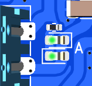{kind=link}
Track Power LEDs - These are indicators that power is being sent to the track, and the mode of the output. With DCC operation, both LEDs should shine brightly when your throttle issues the power-on command. You can also configure the CSB1 to start with power on using a mySetup.h or myAutomation.h file. See more here Startup Configuration. For DC PWM mode operation, when power is on, ONE LED will light for each direction. That is, forward will light one LED and when you select reverse, the other LED will light.

QWiic Connector (I2C) - This is a standard for an I2C bus connection so that the same cable can be used to daisy chain I2C devices like displays, sensors, servos, etc. Please note the pin connection order when making your own cables or when purchasing from discount sites that often wire them incorrectly. For example, red should always be positive power and black is negative DC or “GND”. IMPORTANT: The voltage for this connector is ALWAYS 3.3V!
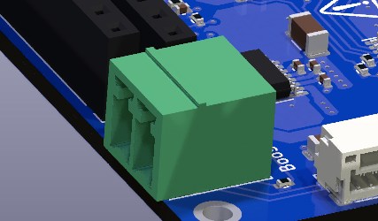{kind=link}
RailSync Connector - This is a standard Railsync input and is labelled “Booster In” on the top of the board. Connecting a RailSync output from a Command Station or Booster will automatically switch the EXCSB1 to booster mode on receipt of an input signal when the CSB1 is running the appropriate EX-RAIL script. Again be sure to wire the DCC outputs to power districts with consistent phasing. Any voltage between 5V and 26V at the input will work. The Digitrax specification is from 12V to 26V. See the DCCWiki article on RailSync 
{kind=link}
OLED I2C Header - This header is primarily designed for an OLED display, but can also be used as a female header for any I2C device that has male pins or for use with Dupont jumper wires. IMPORTANT: Many .96” and 1.3” OLED displays, and some others will connect directly to the pins, however beware that sadly there is no standard for pin order. Make absolutely sure that any display you purchase to connect directly to the header has its pins in the correct order! The correct order is GND, V+, SCL, SDA and is different than other OLED connectors on the board. For more information see: I2C Devices.
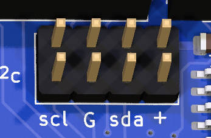{kind=link}
Dual I2C Header - This is a dual male pin I2C header with 2 rows of I2C bus connectors one beside the other. They are wired together on the same I2C bus as the QWiic connector and OLED I2C Header. IMPORTANT: The pin order on these two rows are different from the OLED header, pay attention to the pin order when using Dupont female wires. The correct order for this header is SCL, GND, SDA and V+ as labelled on the board. The EX-CSB1 is a 3.3V device, so all the I2C connectors only supply 3.3V unlike the Arduino Mega. Keep that in mind if you are upgrading from a DIY Arduino Command Station to a 3.3V device ike the EX-CSB1 and are connecting I2C devices. For more information see: I2C Devices.
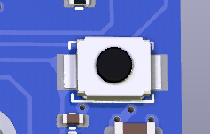{kind=link}
Reset Button - Pressing the reset button does a hard reset of the command station. If the Command Station gets into an unexpected state, you can reset it by pressing this button. The DCC-EX software, EXRAIL Scripts, and any other settings are maintained, but the unit reboots as if it had been turned off. Boards stacked on top of the EX-CSB1 also receive the reset signal, but less well designed boards may not be reset depending upon their own circuit peculiarities. Only rarely should it require unplugging all power from the EX-CSB1 to perform a power-on hard reset.
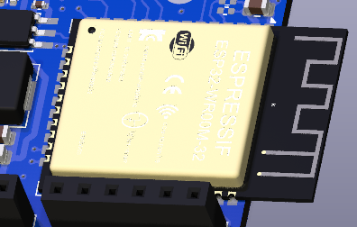{kind=link}
ESP32 Microcontroller / WiFi / WiFi Antenna - One microcontroller controls everything on the EX-CSB1. It runs the EX‑CommandStation software, any mySetup.h file instructions, any myAutomation.h scripts, and provides the WiFi connection to throttles. Be careful in your setup to protect WiFi antenna from being damaged from contact with anything or should the unit be dropped. For best WiFi performance, keep items at least 2cm (.75”) from the antenna and do not allow any metallic objects to be near, underneath, or surrounding the antenna.
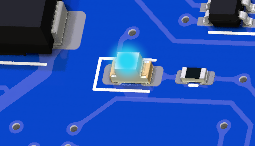{kind=link}
WiFi / User LED - When WiFi is enabled, this LED will stay on. It is under software control in the EX-CommandStation software, so the LED can be repurposed to indicate a user defined function with an EXRAIL script or a <U> command function.
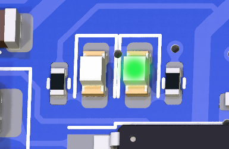{kind=link}
3.3V LED - The 3.3V power LED will light whenever the 3.3V regulator is powered. This occurs when powered by USB, or from an external power supply connected to the barrel jack. This is simply an indicator that the circuitry on the board is powered.

5V LED - The 5V LED will light whenever power is supplied to the barrel jack. This LED indicates that power is being supplied to the 5V regulator which can power an EX-MotorShield 8874 stacked onto the GPIO Headers. Power from the barrel jack will power the 5V regulator which in turn powers the 3.3V regulator. Therefore, when power is supplied via the barrel jack, both the 5V and 3.3V LEDs will be lit.
GPIO Headers - The 4 GPIO headers accept a DCC-EX EX-MotorShield8874. The EX-CSB1 itself has 2 outputs for 2 track power districts. Stacking the EX8874 on these headers provides 2 additional power districts for a total of 4. Any of the 4 outputs can be used for any combination of DCC MAIN, DCC PROG, or DC PWM. You must enable the extra board from the EX-Installer or your config.h file for a manual install. See XXX.
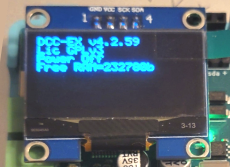{kind=link}
OLED Display (not shown above) - The OLED display provides diagnostics, status, and general information. The OLED display can also show output from EX-RAIL scripts including user defined text. By default, the display shows the version number, license, power status, free memory, and if configured, your WiFi access point login information.
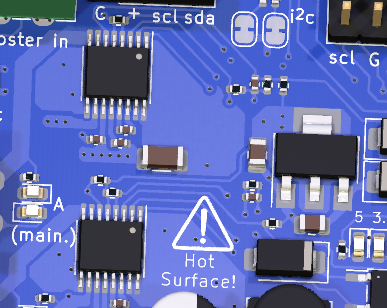{kind=link}
HOT Surface Area - The entire area shown in the image to the right can get extremely hot during operation. Be carful not to touch this area at the top or bottom of the board to avoid being burned. This is especially true at high track current levels. Also be sure to provide proper ventilation to the board. If placed in a case, that case must have proper ventilation. Consider using proper vent holes and a fan if you intend to place the EX-CSB1 inside an enclosure.
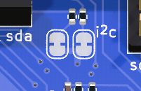{kind=link}
I2C Jumper Pads - There are 2 solder pad jumpers on the EX-CSB1 labelled “i2c”. XXX why and when would I use these?
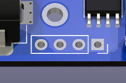{kind=link}
Unpopulated Power Connector - These unpopulated solder pads are used internally for testing and can provide power connections for an optional header. When operated without an EX-MotorShield8874 on top, a user could remove the barrel jack and solder pins here capable of handling the 5A maximum current to power the board and the track.
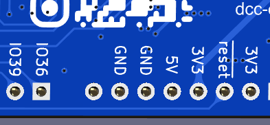{kind=link}
Board Bottom Legend - On the bottom of the board there are several markings such as the DCC-EX logo, board revision, and the QR code that links to this page on our website. Additionally, important pins are labelled should you need access to them from the top of the board headers. Input/Output (GPIO) pins are labelled “IO36”, “IO39”, etc. GND, 5V, and 3.3V are also labelled. Note that when an EX-MotorShield8874 is stacked on top for extra power districts, there are no free GPIO pins left to connect accessories directly the EX-CSB1. You must use the I2C pins and connect port expanders and/or servo boards to connect your accessories.
XXX
Powering the EX-CSB1

2.1mm Screw Terminal Adapter
The CSB1 has a 2.1mm x 5.5mm power jack. If you already have a power supply with bare wires, you can use an optional 2.1mm x 5.5mm screw terminal block adapter. For more information about power supplies, including how to use one power supply to supply all the different voltages on your layout, see Power Supplies.
To power up the CSB1, just plug your power supply into the mains power (aka wall outlet) and connect the barrel end to the Command Station. Make sure your power supply matches the needs of your setup: the voltage should be between 12V and 25V DC, depending on the scale of your locomotives, and it should provide at least 2A of current with good over-current performance and voltage stability. To get the most out of your EX-CSB1, we suggest using a moden switching power supply with 4A or more. For Z scale, 12V is usually enough, but for N, HO, and OO scales, we recommend using between 14V and 16V DC. It’s important that your DC power is well-regulated which is why we suggest a modern switch-mode power supply with double insulation and strong overload protection.

12V/3A Power Supply
Don’t worry if your power supply offers more amps than you need. While too much voltage can be harmful, extra current isn’t a problem since the CSB1 will only use as much as it needs. In fact, it’s better to have a bit more current than too little. However, remember that both voltage and current can be dangerous if not handled properly. The barrel connector helps add some safety, but be cautious—if, for example, a metal tool accidentally touches the terminals of a high-powered supply, it could cause a short circuit.
For more details on how much current do I need, see [link] XXX
When you connect power to the CSB1, you should see one or both bright green power LEDs light up, confirming that the electronics are working. However, for safety, track power will be off by default when you first plug in the EX-CSB1. This is to prevent power from accidentally being applied to your layout before everything is ready. If you prefer, you can change this default setting [link] XXX.
XXX
DCC vs. DC PWM: A Quick Overview
DCC (Digital Command Control): DCC uses a constant voltage on the track with digital signals embedded in the power to control the speed, direction, and functions of your trains. There’s no need to worry about polarity in DCC, making wiring simpler as your layout expands. The digital signal allows for precise control of multiple trains on the same track, all receiving power at the same time. Each device connected to the track contains a “decoder” that only responds to commands sent to its unique address.
DC (Direct Current) PWM: DC PWM operation suits traditional or legacy locomotive control, where the direction and speed of your trains are controlled by varying the voltage and switching polarity. In DC mode, one rail is positive with respect to the other. The train moves forward when voltage is applied and reverses direction when the polarity is flipped. DC control is simpler but less flexible, especially if you want to run multiple trains on the same track simultaneously. Under DCC-EX, DC PWM outputs are given a virtual DCC address which allows WiThrottle/DCC-EX throttles to control your DC locos on the piece of track powered by that output. The DC PWM frequency can be set using virtual DCC Functions 28-31 (XXX check!)
Managing DCC and DC Modes in TrackManager: If you are ready to dive into customizing your track outputs, TrackManager is the tool you’ll use. It allows you to easily switch between DCC and DC modes for any track connected to your EX-CSB1. You can also set up different tracks for specific purposes, such as making one track a Booster, configuring your PROG track, or enabling Auto-Reverser mode.
For detailed steps on how to use TrackManager to change track modes and settings, check out the TrackManager page.
XXX
Connecting and Testing Your Command Station
XXX
What you will need
An EX-CSB1 Command Station
A Power supply (12V - 16V DC see Power Supplies)
A DCC loco (DC can work also)
Track
A throttle (You can use your phone or a computer - see below)
16 to 28AWG/1.5mm^2 Wire
Jeweller’s flat bladed screwdriver (1.5 - 2mm blade)
A laptop or other computer*
A USB cable*
*Optional for connecting connecting to a computer
XXX
Start with all power disconnected
Before connecting any wires to your command station or tracks, make sure you have unplugged the power supply from the wall or removed the barrel connector from the command station. It is crucial to ensure that the command station has no power while you are working on your connections.
XXX
Connecting to Your Tracks
The power connection to your track will be either wires you solder yourself to the rails or via a power connector that plugs into track such as Kato Unitrack. We will leave it up to you to determine the proper connection to your track.
Once you are sure power is disconnected from the CS and the power LED is no longer illuminated, you can connect wires from the A output (+ and -) of the command station to the track. For DCC operation it does not matter which wire goes to which rail, since there is no polarity. However, as you layout grows, it is important to stay consistent with your wiring to ensure that different power districts remain in phase. That just means that when the tracks rapidly switch between one being energized and the other at ground potential, all the districts stay synchronized. You can find more detail on this in our wiring section XXX. [link]
For DC operation, polarity does matter. One rail is positive, and the other is negative, which determines the direction your train will move when voltage is applied through the command station. If you reverse the voltage, the train will change direction and run in reverse.
XXX
DCC Operation
The EX-CSB1 is set to operate in DCC mode by default. If you want to switch to DC mode, you can find instructions on how to do that here XXX [link]
XXX
DC Operation
When using DC mode with the EX-CSB1, it is important to understand that this is mode does not produce the traditional varying of the DC voltage to control the speed of your locomotive. The speed of your train is controlled using a method called PWM (Pulse Width Modulation), so instead, the track always receives full voltage whenever the throttle is set above zero.
How PWM Works - PWM works by rapidly turning the voltage on and off to the track. The rate at which this happens adjusts the “effective” voltage that the locomotive’s motor experiences. For example, if the voltage is on 50% of the time and off 50% of the time, the motor behaves as if it’s receiving half of the full voltage. This technique is similar to how a DCC decoder controls a motor in a DCC-equipped locomotive. See the image below from Sparkfun.com for an example:
{kind=link}
PWM Waveform Image. Click the image to enlarge.
Benefits of PWM in DC Operation - Using PWM for speed control has several advantages, particularly in terms of smooth operation. Trains start and stop more gradually, and running at slow speeds becomes smoother and more consistent. This gives you better control over your locomotives, making your layout more enjoyable to operate, especially during more delicate maneuvers.
Frequency of PWM in DC Operation - PWM can use a variety of frequencies for the pulses it sends, and this can alter motor behaviour and noise etc. The default frequency used for the CSB1 is xxHz, but this can be varied using the virtual DCC functions 28-31 (check) to allow you to alter the frequency to better suit your loco’s motor. This can of course be done during running from the throttle.
XXX - map of function number to frequency
XXX
Track Outputs
You will notice that the two track outputs on the EX-CSB1 are labelled A and B. In the standard DCC-EX configuration of a CSB1, A is configured for DCC MAIN operation, and B is configured for PROG or programming track output. We recommend connecting your track to the A MAIN output initially to test your Command Station. To alter this default configuration of DCC outputs, or for DC Mode, you would need to configure outputs with a TrackManager command in the mySetup.h file or via Routes. See the TrackManager page
[screw terminal image] XXX
The pluggable male screw terminals accept to 16 to 28 AWG/1.5mm^2 gauge solid or stranded wire. If you use stranded, we recommend “tinning” the ends of the wire to make a good connection and ensure that stray wire whiskers don’t stray outside the screw terminals and cause a short circuit. Larger wire can handle more current and provide less resistance. 18-22 AWG is a good start. Keep your wires short by mounting the CS close to the track. See XXX for more information or wire gauge.
Unscrew both screw terminals with a flat blade jeweller’s screwdriver. The screws just need to be loosened enough to fit your wires into the holes. Tighten down both screws once you have inserted the wires.
[plug image]
XXX
Turning on Power
Now you can connect your track power supply to the barrel connector on the CSB1 and then plug the other end into the wall. You should see status information on the display including the CSB1 firmware version. (If you do not have a display, you will need to connect a serial monitor XXX This is a mess of having to have so many options and send people back and forth and have an entire section on using a serial monitor. Just link to it? Yeah… link to it… it’s why I insisted on an OLED display XXX PMA :-P )
The DCC-EX EX-CSB1 Command Station/Booster will power up in WiFi Access Point mode as configured out of the box, with a Wifi network SSID of DCCEX_xxxxxx and password of PASS_xxxxxx, both of which will be visible on the OLED display (or serial monitor log) after it boots.
XXX figure link to OLED display. Also link to serial monitor log section?
Access Point (AP) mode creates a separate WiFi network on the Command Station itself, whereas Station (STA) mode allows the Command Station to join as a WiFi device on your home or layout WiFi network. We have the EX-CSB1 set to default to AP mode for convenience of being able to get up and running quickly.
The WiFi LED will illuminate once WiFi is configured and ready as an Access Point (or Station if reconfigured for STA mode.)
XXX figure link showing WiFi LED
XXX
Connecting a Throttle
XXX suggest we cater for both Wifi and WebThrottle with just a link to a generic page… such as https://dcc-ex.com/throttles/software/index.html#gsc.tab=0 which we may need to make more generic?? XXX
XXX
Connecting via Wifi
XXX should title be “connecting with your phone?” Do we link to the engine driver page or give a short version here? Or to we break up the page and the ‘Next’ button goes to a mirrored page so there is only one page to maintain?
Please connect your smartphone or tablet where you previously installed Engine Driver or WiThrottle to this WiFi network with the password shown on the OLED to begin running trains immediately! You have nothing further to do to start using your DCC-EX EX-CSB1. You can remove the protective cover on the OLED if you wish.
XXX figure image of phone logging in to the AP
::NOTE: Note too that some smart phones and tablets will try hard to only connect you to a WiFi network that has Internet access, and you may be asked if you really want to connect to a WiFi network without it. For the sake of getting up and running quickly, just dismiss such queries. In the next section we show you how to reconfigure the EX-CSB1 to join your home or layout WiFi network should you prefer it.
XXX
Connecting Via USB and EX-WebThrottle
XXX Do we just link to the webthrottle page or do a quick version here?
XXX
Use TrackManager to Set Outputs to DCC or DC Operation
XXX why is this restated?? (See somewhere above)
Our Trackmanager technology allows you to configure any of 4 outputs to be DCC MAIN, DCC PROG, or DC PWM in order to run DCC or DC locos. 2 outputs are included with the EX-CSB1 with 2 more available with the purchase of an EX-MotorShield 8874 that just stacks on top. By default, output A is configured as a DCC MAIN track and output B is configured as a DCC PROG Programming track. You can dynamically change the configuration using throttles (such as EX‑WebThrottle, JMRI, or Engine Driver) or you can configure your CSB1 to always start in your desired configuration. Note that one of the outputs can be configured in such a way that it is another MAIN power district that automatically switches to programming mode when a programming command is issued by your throttle and then automatically switches back to MAIN. XXX have this be a NOTE? See a detailed TM section?
XXX
Upgrading the Software
XXX - any reason you didn’t you just copy my very carefully written Getting Started Guide content here??? PMA
The EX-CSB1 comes preloaded with the Command Station software, so you can start using it right out of the box. However, if you wish to customize its configuration or update the software, you can easily do so by connecting the EX-CSB1 to your computer via USB. Follow these steps to make any changes you need:
Step 1: Connect the EX-CSB1 to Your Computer Locate the USB Port: Find the USB-C port on your EX-CSB1. Use a Compatible USB Cable: Grab a USB-C cable that matches the port on your PC or laptop. This will likely be a USB-A to USB-C cable for older PCs and laptops, or a USB-C to USB-C for more modern PCs and laptops. Plug It In: Connect one end of the USB cable to the EX-CSB1 and the other end to an available USB port on your computer.
Step 2: Install the Required USB Drivers Automatic Installation: In many cases, your computer will automatically recognize the EX-CSB1 and install the necessary USB serial drivers. Manual Installation: just link to the CH340 content we already have?? XXX
If the drivers do not install automatically, you may need to download them from the official website. Follow the instructions provided on the site to complete the installation.
Step 3: Access or Update the Command Station Software Open the Software: Since the EX-CSB1 comes preloaded with the Command Station software, you can access it directly by launching the program on your computer after connecting the EX-CSB1. Download the Latest Version (Optional): If you want to update to the latest software version, visit the official DCC-EX website and download it. Open the installer and follow the on-screen instructions. Modify the Configuration: The software allows you to customize the EX-CSB1’s configuration to suit your specific needs. Use the setup wizard or manual settings within the software to make any changes.
Step 4: Verify the Connection Open the Command Station Software: Once the software is updated or if you’re making adjustments, launch it from your desktop or start menu. Check the Connection: The software should automatically detect the EX-CSB1. If it doesn’t, ensure that your USB cable is securely connected and try again.
Step 5: Start Using or Customizing Your Command Station With the EX-CSB1 connected, you’re ready to start using it or making any necessary adjustments to the configuration. Explore the features and tailor the settings to optimize your model railway experience.
XXX
Changing the Configuration
XXX - see my Getting Started Guide content?? PMA
XXX
Uploading EXRAIL Scripts
XXX - generic link here?
XXX
Resetting the CS
XXX - what do you mean here??
XXX
Soft Reset Recovery
XXX
Factory Reset
XXX - no need? Just specify the “default” settings needed for EX-Installer??? PMA
If you need to reset your EX-CSB1 Command Station software to its default settings, you’ll need to reinstall the software. This process will overwrite your current configuration with the original default settings. Follow these steps to reset the software:
Step 1: Disconnect Power Before you begin, make sure the Command Station is powered off. Unplug the power supply from the wall or disconnect the barrel connector from the CSB1. This ensures that the system is completely powered down before the reset process.
Step 2: Connect to Your Computer via USB Locate the USB Port: Find the USB port on your EX-CSB1. Use a Compatible USB Cable: Connect the CSB1 to your computer using the appropriate USB cable. Power On: Plug the power supply back in or reconnect the barrel connector to power on the CSB1.
Step 3: Download the Latest Installer Visit the DCC-EX Website: Go to the official DCC-EX website and download the latest version of the Command Station software installer. Save the Installer: Save the installer file to a location on your computer where you can easily access it.
Step 4: Run the Installer Open the Installer: Locate the downloaded installer file on your computer and double-click to run it. Follow the On-Screen Instructions: The installer will guide you through the reinstallation process. During this process, the existing software on the EX-CSB1 will be overwritten with the default settings. Complete the Installation: Allow the installer to complete the process. Once done, the software will be reset to its original configuration.
Step 5: Verify the Reset Launch the Command Station Software: After the installation is complete, open the Command Station software to ensure it’s running correctly with the default settings. Check the Configuration: Confirm that the software has been reset by checking the basic settings and making sure they match the defaults.
Step 6: Reconfigure if Necessary Customize Settings: If you need to adjust the settings to suit your layout, you can now do so within the software. Test Your Setup: Power up your layout and test the system to ensure everything is working as expected.
XXX
USB Connection to a Serial Monitor
XXX - NOOOOO… can we not do this using just EX-Installer’s Device Monitor??
Using the appropriate USB-A to USB-C or USB-C to USB-C cable, you can use the Arduino IDE, EX-WebThrottle, or JMRI to act as a serial monitor to view diagnostic messages from the Command Station or send manual commands for testing or configuration.
XXX
USB Connection to JMRI
XXX
Integrated displays
XXX
Connecting Accessories (I2C)
The EX-CSB1 Command Station allows you to expand your model railway setup by connecting various I2C accessories such as sensors, displays, and GPIO expanders. Using the DCC-EX EX‑Installer and additional tools, you can easily configure these accessories to work with your layout.
Step 1: Selecting I2C Accessories
Choose Compatible Accessories: Common I2C accessories include displays (e.g., OLED, LCD), sensors (e.g., temperature, distance), and GPIO expanders. Ensure your accessories are compatible with I2C and check the DCC-EX website for supported devices.
Step 2: Connecting Accessories to EX-CSB1
Locate the I2C Ports: Use the “I2C x 2” ports for general I2C devices. Use the “OLED I2C” port if you’re connecting an OLED display. Wiring the Devices: SDA (Data Line): Connect the SDA pin on your accessory to the SDA pin on the EX-CSB1. SCL (Clock Line): Connect the SCL pin on your accessory to the SCL pin on the EX-CSB1. Power: Depending on your device’s requirements, connect the VCC pin to either 3.3V or 5V on the EX-CSB1. Connect the GND pin to GND. Daisy-Chaining Multiple Devices: If connecting more than one I2C device, ensure each has a unique I2C address, which can be set via jumpers or configuration switches.
Step 3: Installing and Running the DCC-EX Installer
Download and Install:
Visit the DCC-EX Installer page to download the latest version. Follow the on-screen instructions to install the software on your computer. Run the Installer:
Connect your EX-CSB1 to your computer via USB. Open the DCC-EX Installer. The installer will guide you through the initial setup, including basic configurations like setting up I2C displays. Configuring I2C Displays:
The installer will allow you to configure connected displays (such as OLED or LCD) directly during the setup process. For other I2C devices, further configuration may require manual adjustments using the DCC-EX CommandStation software or editing configuration files.
Step 4: Manual Configuration for Advanced Accessories
Access the CommandStation Software:
For advanced I2C accessories like sensors or GPIO expanders, you may need to manually configure them via the DCC-EX CommandStation software. This involves accessing configuration files or using a serial monitor to input specific commands. Editing Configuration Files:
If necessary, open the configuration files provided with the DCC-EX software to manually add and configure your I2C devices. Instructions for this can be found on the DCC-EX documentation pages. Save and Apply Settings:
After configuring your devices, ensure you save and apply your settings through the CommandStation software. Step 5: Testing and Troubleshooting Test Your Setup:
Once configured, power on your layout and check if the I2C devices are functioning correctly. Use the diagnostics tools provided by the DCC-EX software to troubleshoot any issues. Troubleshooting Common Issues:
Double-check wiring connections and I2C addresses. If issues persist, refer to the troubleshooting guides on the DCC-EX website. Additional Resources For more detailed instructions and support, refer to these resources:
XXX are these main headings or subheadings of what is above?
XXX
Adding an EX-MotorShield 8874
You can and an EX‑MotorShield8874 to provide an additional 2 outputs. You may want to do this if you want to split your DCC layout into separate power districts or if running DC PWM, create up to 4 blocks before you need to add a booster. XXX more detail here?
XXX
DCC-EX I2C Hardware Overview
XXX
Using the EX-CommandStation Software
XXX
DCC-EX Installer Guide
XXX
Connecting and Configuring I2C Displays
XXX
Ordering in Quantity or wishing to Resell
For quantities of 10 or less per year, you may utilize a PCB manufacturing and assembly service such as JLCPCB without licensing fees. A donation to DCC-EX would be appreciated, so click the DONATE button! The production files are available on the DCC-EX GitHub. XXX include donate button on the page
Entrepreneurs wanting to use the design to offer commercial quantities to their local communities should contact DCC-EX (sales @ dcc-ex.com) to arrange a bulk purchase or a license to manufacture. Licensing includes donating a royalty to DCC-EX per board sold.